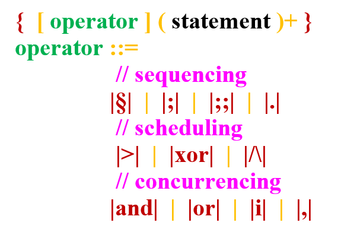

Instructions are lines of statements which can modify the model's data dynamically. They are gathered in instructions blocks (which might contain any number of instructions) which are delimited by brackets.
To write an instruction block, use the following syntax (see BNF syntax for explanation) :
We'll explain in the following the meaning of the "operator".
However, you can't write instruction blocks anywhere you want. It must make sense within the execution of the system. A non exhaustive list of the acceptable places to put instruction blocks is the following :
An instruction block may contain several instructions. Each one of those may represent an independent process. Therefore, we may want to specify a scheduling defining the order and eventual interactions between those different processes.
This "order" or "scheduling" of the instruction block can be manipulated by an optional "operator" modifier in the declaration of the instruction block.
We'll call those operators "order operators".
As seen in the picture above, there are several existing choices for the "order operator" modifier. Those are the same than those used to specify the "model of computation" of "and" machines. In the documentation, a part is dedicated to them : here.
By default, when we declare an instruction block without specifying an operator, the default operator is the standard sequence |;|.